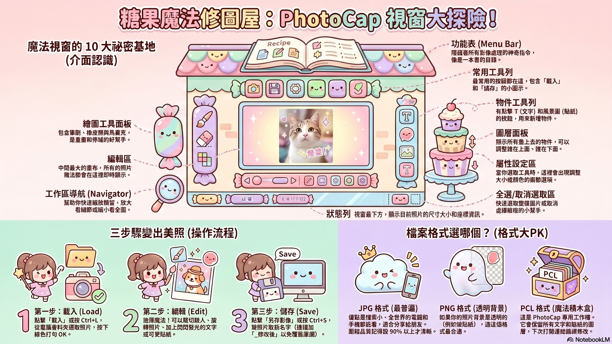
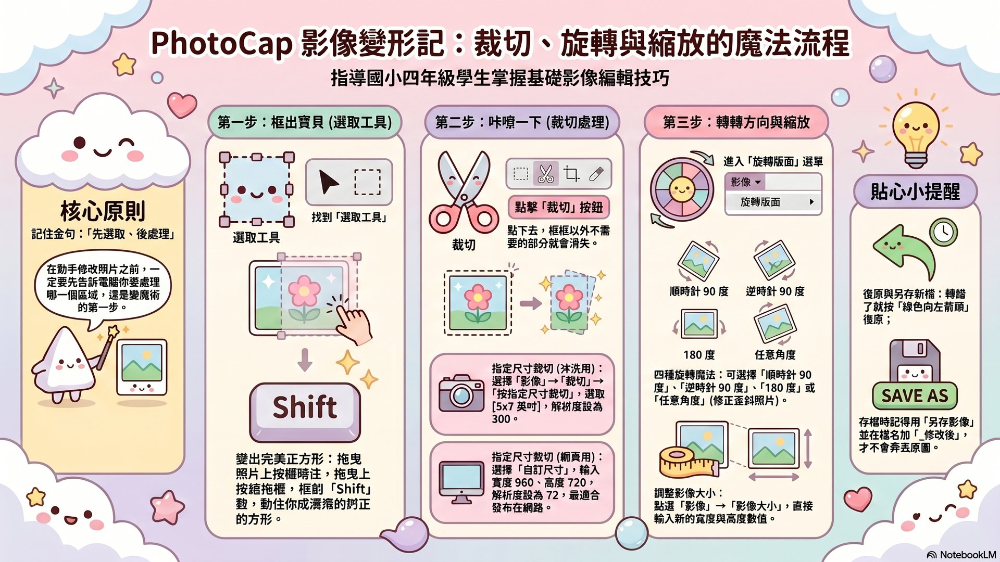
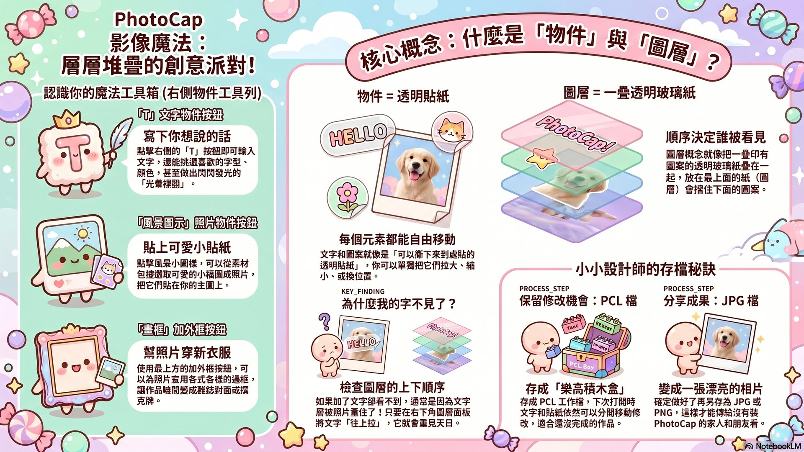
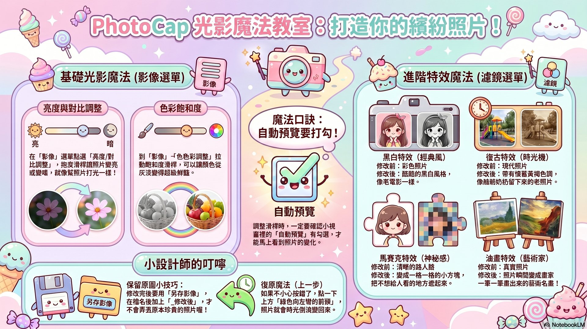

PhotoCap 是台灣呂聰賢老師做的免費影像處理軟體，已經陪伴台灣家庭和學校超過 20 年！ 它就像「小朋友也能用的 Photoshop」 — 全中文、超好上手，可以做相片書、撲克牌、月曆、雜誌封面... 跟著阿凱老師走過 4 個關卡，今天就能做出讓爸媽驚呼的作品！

點下方仿真介面圖的不同區域，看看每個地方叫什麼名字、可以做什麼！
C:\Program Files\PhotoCap6。
在下方範例照片上 按住滑鼠左鍵拖曳，框出你想保留的區域；放開後按「裁切」看看效果！

下方有 4 個圖層，按上下箭頭可以調整哪個在前、哪個在後。看看效果區的位置怎麼變！
💡 觀察：上面的圖層會蓋住下面的圖層

點下方任一濾鏡，看看效果預覽和適合的場景說明！
挑下面任何一個主題，運用今天學到的 4 個關卡功能，做出讓全班讚嘆的作品！完成後請另存 JPG 給老師，並保留 PCL 工作檔下次還能修改。
用家人合照 + 加文字「祝媽媽生日快樂」+ 套用蛋糕貼紙 + 漂亮相框 = 印出來送媽媽！
套用 PhotoCap 雜誌封面模板 + 自己的帥照 / 美照 + 文字「四年三班最快飛毛腿」 + 調亮度 + 復古濾鏡。
準備 4 張寵物 / 玩具照 + PhotoCap「撲克牌模板」 + 加上名字年齡 + 套相框 = 印出來跟好朋友玩心臟病！
世界景點照（巴黎鐵塔 / 東京）+ 自己的去背照片 + 圖層融合 = 假裝出國玩！
這個駕駛艙是用 Google 的 NotebookLM（AI 知識整理器）+ Claude Code（AI 程式助手）打造的！下面是相關資源：
本駕駛艙專用的精簡本（含主講者形象 + 萃取精華）
📚深度搜尋找到的 PhotoCap 完整教學資源整理
⬇️下載 PhotoCap 6.0 主程式 + 素材包 V1/V2/V3
請輸入老師密碼